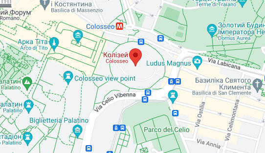

Колізей
Колізей — визначна пам'ятка Італії, яка не потребує особливого опису. Стародавній амфітеатр, одна з найграндіозніших споруд Старого світу, яка збереглося донині. Безумовний символ не лише Риму, але й усієї країни.



Колізей — визначна пам'ятка Італії, яка не потребує особливого опису. Стародавній амфітеатр, одна з найграндіозніших споруд Старого світу, яка збереглося донині. Безумовний символ не лише Риму, але й усієї країни.
Фонтан Треві — якщо запитати перехожого, які пам'ятки тут є в Італії може відразу назвати, цей фонтан напевно буде однією з них. Ключове місце в Римі, куди приходять всі, щоб кинути на згадку монетку та обов'язково ще повернутися до Вічного міста.
Собор Святого Петра - головна визначна пам'ятка Ватикану, місце паломництва всіх католиків світу.
Музеї Ватикану - одна зі святих Італії та всього світу. Також не можемо не згадати і Сикстинську капелу з розписом на стелі авторства самого Мікеланджело.
Гранд-канал — своєрідна пам'ятка, яка є за сумісництвом і головним транспортним вузлом Венеції, яким ходять річкові трамваї та знамениті гондоли.
Пізанська вежа - дивно, але один з основних символів Італії, нахилена старовинна вежа, знаходиться в Пізі, куди туристи приїжджають не так і часто.